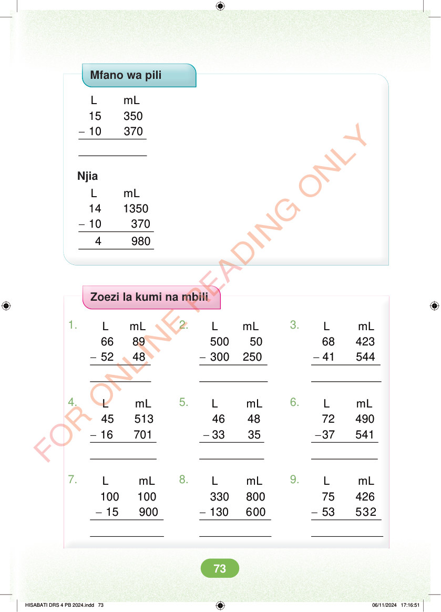

Mfano wa pili - L mL 15 350 10 370 Njia - L mL 14 1350 10 370 4 980 Zoezi la kumi na mbili 1. 2. 3. - - - L mL 68 423 41 544 L mL 66 89 52 48 L mL 500 50 300 250 4. 5. 6. - - - L mL 46 48 33 35 L mL 45 513 16 701 L mL 72 490 37 541 7. 8. 9. - - - L mL 100 100 15 900 L mL 330 800 130 600 L mL 75 426 53 532 HISABATI DRS 4 PB 2024.indd 73 HISABATI DRS 4 PB 2024.indd 73 06/11/2024 17:16:51 06/11/2024 17:16:51